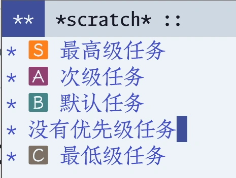

emacs-美化org-mode中任务的优先级priority
当我还年轻的那些日子，我从来不为任务设定优先级。因为我确信，且实践中也证明了这件事：人类的大脑会自动帮你判断任务优先级，仅需看一眼任务列表即可。
现在，也许是我老了，感受到每一次审视任务列表都在消耗我所剩不多的判断精力；也许是我想通了，从代码简化的角度看，要尽量避免重复判断任务优先级，所以利用文本中的优先级作为人脑判断结果的缓存。总之我开始配置并使用org-mode自带的任务优先级了。
由于是内置的功能，因此初始情况并不需要配置。直接在没有优先级的任务上按 S+↑/↓ ，就能创建一个默认的等级 [#B] 。然后再按 S+↑/↓ ，就可以对应提升或者降低优先级。
但是我们总是想美化一下。目前我采取了第三方包 org-fancy-priorities ，它可以为设定的序列符号自定义overlay替换字符串。
1. 具体配置
(use-package org-fancy-priorities
:after org :ensure t :demand t
:hook
(org-mode-hook . org-fancy-priorities-mode)
:custom
(org-priority-highest 1)
(org-priority-lowest 4)
(org-priority-default 3)
(org-fancy-priorities-list
`((?1 . ,(propertize "🆂" 'face '(:foreground "#fe8019" :weight bold :slant normal)))
(?2 . ,(propertize "🅰" 'face '(:foreground "#8f3f71" :weight bold :slant normal)))
(?3 . ,(propertize "🅱" 'face '(:foreground "#458588" :weight bold :slant normal)))
(?4 . ,(propertize "🅲" 'face '(:foreground "#7c6f64":weight bold :slant normal))))))
在上述配置中，我设置了优先级为 1>2>3>4 ，且默认值为3。然后我配置了美化图案，使其对应展示为 🆂>🅰>🅱>🅲 ，并根据这个issue的提示，手动设置了前景颜色。
这样一来，当我们按下 S+↑/↓ 时，会创建一个展示为 🅱 的等级，并跟随我们的 S+↑/↓ 变动为其他符号。
2. 效果图
